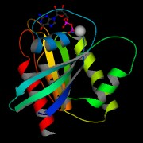
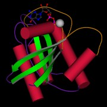
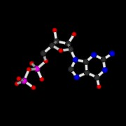

MolScriptSVG 2.3 (development)
New scalar colours: molauto -bfactor, -alphafold, or
-alphafold_gradient. These colour cartoons and ligand atoms, including
banded helix cylinders. See SCALAR_COLOURS.md.
Add an explicit key with molauto -legend X Y Z WIDTH HEIGHT, validate a
script without rendering with molscript -check, and inspect drawing-command
groups in SVG output. See legends, checking and SVG groups
for syntax, examples and limitations.
Further figure tools add distance/angle annotations, labelled
connectors, adaptive curve sampling, continuous scalar colours, vertical and
categorical keys, and editable reusable view files.
Distance labels now use Å, and B-factor legends use Ų. Thin vector backbones
preserve the original spline exactly: use turn to pass through C-alpha atoms,
or coil for a smoothed path. See the updated
backbone example with C-alpha markers and
font/smoothing details.
Choose label fonts with -font serif, -font sans, -font monospace, or
set labelfont "Helvetica"; for a backend-native name. See
output fonts for supported formats, FreeType image options and
comparison previews.
Version 2.3 is unreleased; the 2.2 release notes below are historical.

Local HTML documentation starts at docs/index.html or
README.html. HTML pages link to HTML companions rather than raw
Markdown. To refresh them after editing the Markdown sources, install
Python-Markdown (python3-markdown on Debian/Ubuntu) and run:
python3 scripts/build-html-docs.py
python3 scripts/build-html-docs.py --check
The check requires only Python's standard library and verifies documentation links, local HTML targets and heading anchors in the generated pages.
Version 2.2 adds display-independent bitmap/FreeType labels, safer geometry,
and fixes across SVG, image export, X3D and MolAuto. The executables remain
molscript and molauto. Generated example files are included.
See the 2.2 release notes, changelog, example gallery and release procedure. The repository is jwm1/MolScriptSVG.
Build, run regression tests, and refresh all SVG/PNG examples with:
make -C code
python3 scripts/test-svg.py
python3 scripts/test-backends-molauto.py
python3 scripts/test-scalar-colours.py
python3 scripts/test-curves.py
python3 scripts/test-annotations.py
python3 scripts/test-figure-tools.py
python3 scripts/test-fonts.py
python3 scripts/test-rendering.py
python3 scripts/test-webgl-browser.py
python3 scripts/test-output-formats.py --images
python3 scripts/regenerate-svg-examples.py
The preview script uses CairoSVG when installed, otherwise Inkscape. It checks
SVG XML and PNG signatures and stages new files before replacing old previews.
The format check uses available external readers; --images requires Pillow
and working EGL. Headless labels use a bundled bitmap font, with optional
FreeType support. See RENDERING_TESTS.md for font options,
geometry checks, browser tests and remaining coverage gaps.
The transparency example compares opaque and
half-transparent geometry; its PNG preview
is also included.


Copyright (C) 1997-1998 Per J. Kraulis
Copyright (C) 2026 James W. Murray
|
 |
 |
 |
MolScriptSVG is a fork of MolScript, a program for displaying molecular 3D structures, such as proteins, in both schematic and detailed representations. As far as I can tell, MolScript is still the only program that can produce high quality protein cartoon diagrams in vector format. This fork extends the output modes of the original MolScript and fixes OpenGL support.
This fork also includes SVG, MetaPost, POV-Ray, X3D and WebGL-oriented output
backends. SVG, MetaPost, and POV-Ray are written directly from the MolScript
geometry pipeline and do not require any external library at export
time. X3D output is available as both XML (-x3d) and Classic
encoding (-x3dv). Both Classic and XML X3D are generated natively
inside MolScriptSVG. The -webgl mode writes an HTML viewer that
embeds the native XML X3D scene and displays it in the browser using
the X_ITE WebGL runtime.
Notes on syntax coverage and known grammar/doc mismatches are collected in UNDOCUMENTED_FEATURES.md.
Fork-specific modifications in this repository are copyright James W. Murray. Those modifications were developed with assistance from OpenAI Codex.
The original documentation is at pekrau.github.io/MolScript.
Open Source
MolScriptSVG is distributed as a fork under the MIT license in this GitHub repository. The original MolScript project is available at MolScript
Version MolScriptSVG 2.3
The first version of MolScript (written in Fortran 77) was released in 1991, and its current version (2.1.2, written in C) in 1998.
This fork keeps the upstream MolScript 2.1.2 language and executable name,
but it is no longer a pristine 1998 code snapshot. The original OpenGL/image
build expected a 1990s GLUT/GLX setup and no longer built cleanly on a modern
Linux system. The code/Makefile.complete file has now been modernized to use
pkg-config for OpenGL, PNG, JPEG and GIF dependencies.
Build
From the repository root, the default full build is:
make -C code -j4
code/Makefile delegates to Makefile.complete, so plain make builds the
full MolScriptSVG binary by default.
Makefile summary
Makefile- Default entry point.
-
Produces the full build by including
Makefile.complete. -
Makefile.complete - Modern Linux-oriented build using
pkg-config. -
Enables OpenGL, EGL-backed image rendering, and PNG/JPEG/GIF support by default.
-
Makefile.basic - Minimal build with no OpenGL or OpenGL-backed raster image outputs.
- Still includes PostScript, SVG, Raster3D, VRML, X3D and WebGL export code.
To build the minimal version explicitly:
make -C code clean
make -C code -f Makefile.basic -j4
To rebuild the full version explicitly:
make -C code clean
make -C code -f Makefile.complete -j4
Full-build dependencies
On a modern Linux system, the default full build expects pkg-config plus
development packages for:
- OpenGL / GLU / GLUT / X11
- EGL
- libpng
- libjpeg
- libgd for GIF encoding
- zlib
A C compiler, GNU Make and Bison are also required for development builds. On Debian/Ubuntu, install the full build and optional FreeType dependencies:
sudo apt install build-essential bison pkg-config freeglut3-dev \
libgl1-mesa-dev libglu1-mesa-dev libegl1-mesa-dev libx11-dev \
libpng-dev libjpeg-dev libgd-dev zlib1g-dev libfreetype-dev
make -C code -j4 USE_FREETYPE=1
FreeType is opt-in; omit USE_FREETYPE=1 for bundled bitmap fonts only.
Clean before switching between basic and complete builds. The FreeType toggle
alone is tracked automatically. Test dependencies and optional checks are in
RENDERING_TESTS.md.
If those are present, make should produce:
molscriptmolauto
with support for:
-ps-svg-mp-pov-r3d-wrl-x3d-x3dv-webgl-gl-eps-epsbw-sgi-jpeg-png-gif
Headless image rendering
The image-output path prefers a headless EGL OpenGL context. That avoids
opening an X11 window and allows -png, -jpeg and -gif rendering without
a working X11 display. If EGL initialization fails, MolScriptSVG falls back to
the hidden GLUT window path for compatibility.
Labels no longer depend on GLUT font initialization. The default
-labelfont bitmap uses a bundled printable-ASCII font with Å and ² glyphs.
UTF-8 input is decoded before rasterization. To enable optional
TrueType/OpenType fonts, install the FreeType development package (for example,
libfreetype-dev on Debian/Ubuntu), then build with make -C code USE_FREETYPE=1.
Select one with -labelfont freetype -fontfile /path/to/font.ttf.
Both paths currently use monochrome bitmap glyphs, not antialiased text.
SVG and PostScript label rendering is unchanged.
MOLSCRIPT_IMAGE_BACKEND=auto|egl|glut selects the image context; the default
is auto. Forced EGL never falls back to X11. Accumulation antialiasing
(-accum) uses software accumulation when the context has no accumulation
buffer.
Compare the labelled bitmap preview and FreeType preview. Commands and test coverage are in RENDERING_TESTS.md.


Example commands
Build:
cd code
make
Run:
./molscript -svg -in examples/ras_std.in -out ras_std.svg
./molscript -mp -in examples/ras_std.in -out ras_std.mp
./molscript -pov -in examples/ras_std.in -out ras_std.pov
./molscript -x3d -in examples/ras_std.in -out ras_std.x3d
./molscript -x3dv -in examples/ras_std.in -out ras_std.x3dv
./molscript -webgl -in examples/ras_std.in -out ras_std.webgl.html
If povray is installed, the generated .pov scene files can be rendered to
PNG images with:
./scripts/render-pov-examples.sh
The broader example refresh script:
./scripts/regenerate-examples.sh
will also render *_pov.png images automatically when povray is available.
The SVG, MetaPost, POV-Ray, X3D and WebGL backends are available in both the basic and complete builds:
./molscript -svg -in examples/ras_std.in -out ras_std.svg
./molscript -mp -in examples/ras_std.in -out ras_std.mp
./molscript -pov -in examples/ras_std.in -out ras_std.pov
./molscript -x3d -in examples/ras_std.in -out ras_std.x3d
./molscript -x3dv -in examples/ras_std.in -out ras_std.x3dv
./molscript -webgl -in examples/ras_std.in -out ras_std.webgl.html
molauto has also been extended with a few modern convenience options:
-window n-rotate a11 a12 a13 a21 a22 a23 a31 a32 a33-translate x y z-ss_palette-colourblind-publication
The -colourblind preset uses a fixed high-contrast secondary-structure
palette:
- helices: orange
- strands: blue
- coils: green
- turns: yellow-orange
-x3dv, -x3d and -webgl are all generated natively by MolScriptSVG.
The -webgl output is a self-contained HTML wrapper around the native XML X3D
scene, but it still loads the X_ITE JavaScript runtime from a CDN at view time.
Fork Changes
This fork differs from the historical 2.1.2 release in a few important ways:
- Added direct SVG output with
-svg. - Added MetaPost source output with
-mp. - Added POV-Ray scene output with
-pov/-povray. - Added a POV-Ray example render script and rendered
*_pov.pngexample images. - Added X3D output in both XML (
-x3d) and Classic (-x3dv) encodings. - Added HTML WebGL viewer output with
-webgl, backed by the X3D scene exporter. - Modernized the OpenGL build in
code/Makefile.completefor current Linux systems usingpkg-config. - Restored OpenGL-backed PNG, JPEG and GIF image export on modern systems.
- Updated the examples gallery to work from a local filesystem checkout and to include the generated SVG assets.
- XML X3D and WebGL are generated natively, without an external converter.
- MetaPost output can optionally include projected axes and semantic comments.
- POV-Ray output now uses fitted orthographic cameras and softer multi-light scene defaults for rendered examples.
Release Status
The current tree has been smoke-tested for:
-svg-mp-x3d-x3dv-webgl- OpenGL interactive mode via
-gl - OpenGL-backed
-png,-jpegand-gif
The generated example outputs under examples/ are intended to be part of the
repository for comparison and regression checking.
For a quick smoke test after building:
./scripts/smoke-test.sh
Reference
Per J. Kraulis
MOLSCRIPT: a program to produce both detailed and schematic plots of
protein structures.
J. Appl. Cryst. (1991) 24, 946-950
This paper is now available under Open Access: PDF